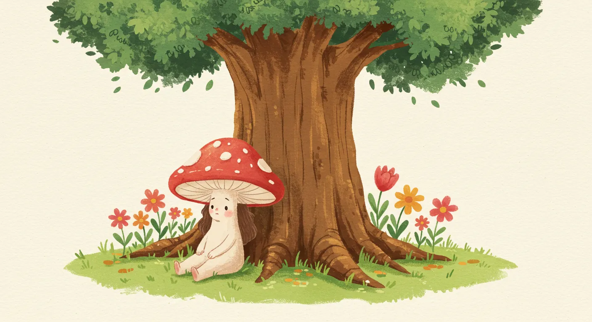
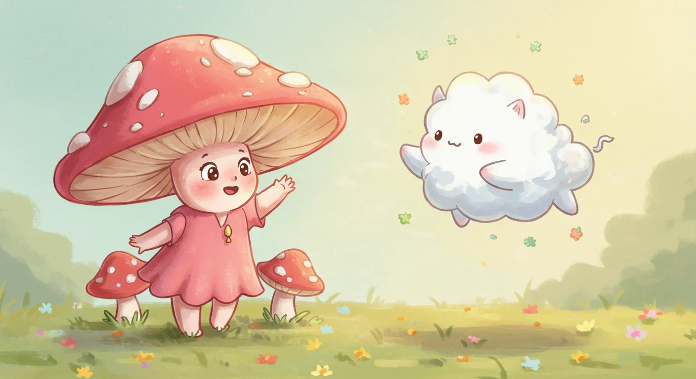
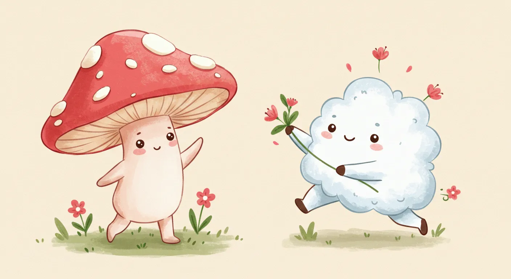
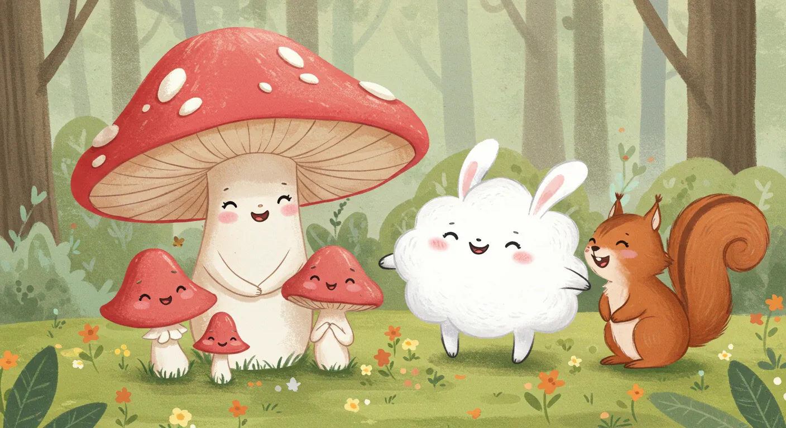
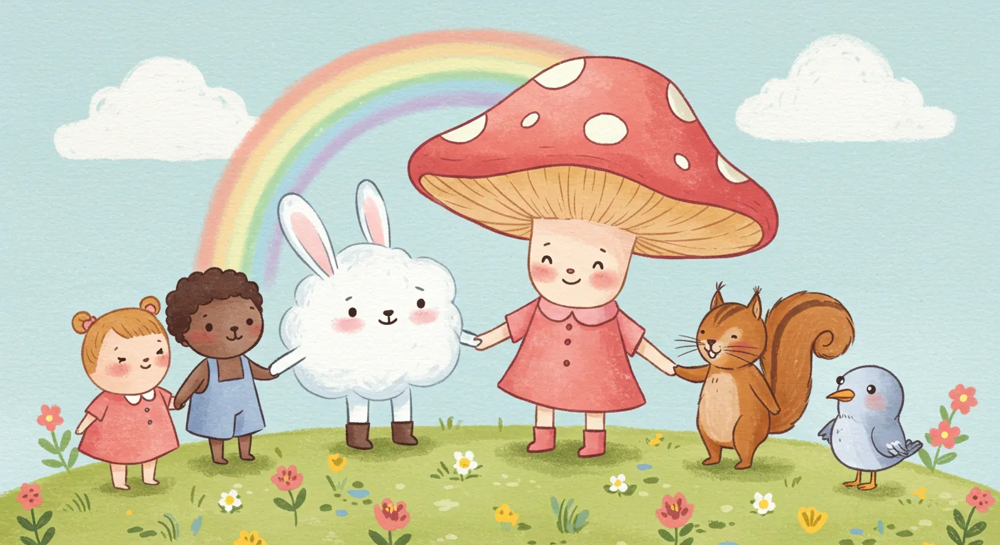
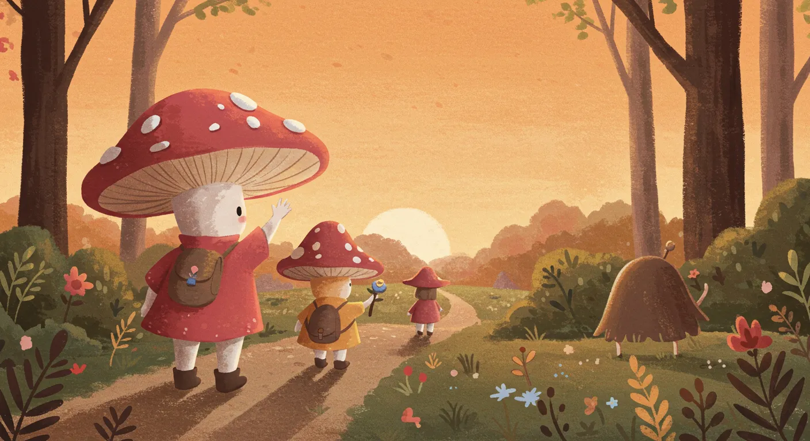

こんにちは、福祉×AIクリエイターの山本です。
自分の作った道具って、本当にちゃんと動くんだろう？ ときどき、そんな風に不安になることがあります。当サイトで公開しているプロンプト集も、私にとっては大切な「道具」の一つです。
そこで今回は、公開している「子供向け知育絵本プロンプト」が本当に使えるのか、制作者である私自身が徹底検証してみたいと思います！
AIとの対話で物語を考え、イラストを作り、一つの作品に仕上げていく。その共同制作の一部始終を、包み隠さずお見せします。果たして、どんな絵本が生まれるのでしょうか？
ステップ1：AIに「絵本作家アシスタント」になってもらう
まずは主役の登場です。今回は対話AIとしてGoogleの「Gemini」にお願いすることにしました。Geminiの入力欄に、公開している指示書をまるごとコピー＆ペーストします。
すると、Geminiから「準備ができました。どのようなテーマの知育絵本を作りますか？」と返事が。無事に、私の専属「絵本作家アシスタント」が誕生したようです。
ステップ2：「友達」というテーマを投げてみる
アシスタントの問いかけに、私はシンプルに「友達」とだけ入力してみました。AIとの対話は、難しく考える必要はありません。一番伝えたいキーワードを投げるだけで、あとはAIがよしなに考えてくれます。
さて、AIアシスタントからの最初の提案がこちらです。
AIからの提案：タイトルと章立て
タイトル： ちいさなキノコのリリーとふわふわのお友達
サブタイトル： みんなちがって、みんないい！
- 第一章： ひとりぼっちのリリー イラストプロンプト (第一章):Cute children's book illustration style, a small, lonely mushroom named Lily sitting by herself under a big tree, looking a little sad, surrounded by colorful flowers, simple, warm colors, watercolor texture.
- 第二章： ふわふわの出会い イラストプロンプト (第二章):Cute children's book illustration style, Lily the mushroom looking surprised and happy as a fluffy, friendly cloud animal floats down to greet her, gentle sunlight, simple, warm colors, watercolor texture.
- 第三章： ちいさなちがい、おおきな発見 イラストプロンプト (第三章):Cute children's book illustration style, Lily the mushroom and the fluffy cloud animal playing together, showing their different ways of moving and interacting, happy expressions, simple, warm colors, watercolor texture.
- 第四章： あたらしいお友達 イラストプロンプト (第四章):Cute children's book illustration style, Lily the mushroom, the fluffy cloud animal, and other forest animals (a gentle rabbit, a friendly squirrel) happily gathered together, sharing a laugh, simple, warm colors, watercolor texture, forest background.
- 第五章： みんなちがって、みんないい！ イラストプロンプト (第五章):Cute children's book illustration style, Lily the mushroom and all her diverse friends (cloud animal, rabbit, squirrel, a tiny bird) standing together in a circle, holding hands (or paws/wings), smiling, emphasizing their unique qualities, simple, warm colors, watercolor texture, a rainbow arching gently in the sky.
- 裏表紙 イラストプロンプト (裏表紙):Cute children's book illustration style, Lily the mushroom and her friends waving goodbye from a distance, silhouetted against a warm, setting sun, cozy forest path, simple, warm colors, watercolor texture.
素晴らしい…！「友達」という一言から、「多様性」をテーマにした、こんなにも心温まる物語の骨子を一瞬で作り上げてくれました。「みんなちがって、みんないい！」というサブタイトル、素敵すぎませんか？
ステップ3：AIと一緒に、挿絵を作ってみる
次に、AIが提案してくれたイラスト用プロンプトを、画像生成AIの「ImageFX」にコピー＆ペーストして、各シーンの挿絵を作ってもらいます。物語の流れに沿ってご紹介しますね。
▼ 表紙：恥ずかしがり屋のリリー

▼ 第一章：ひとりぼっちのリリー

▼ 第二章：ふわふわとの出会い

▼ 第三章：ちいさなちがい、おおきな発見

▼ 第四章：あたらしいお友達

▼ 第五章：みんなちがって、みんないい！

▼ 裏表紙：

これも素晴らしいクオリティです。指示書に「優しく、暖かく、シンプルな絵本風のスタイル」と指定しておいたルールを、AIは完璧に守ってくれています。
ステップ4：AIが紡いだ物語
最後に、AIアシスタントに執筆してもらった物語の全文をご紹介します。子どもたちにも伝わるよう、優しく、そして大切なメッセージが込められた物語が生まれました。
『ちいさなキノコのリリーとふわふわのお友達』
第一章：ひとりぼっちのリリー
ちいさなキノコのリリーは、森のすみっこでひとりぼっちでくらしていました。 リリーのまっかな帽子は、雨上がりのしずくをきらきらと輝かせたけれど、リリーはなんだかさみしそう。ほかのキノコたちは、みんなでくっつきあって楽しそうにおしゃべりしているのに、リリーは少しはずかしがりやさんだから、いつも遠くから見ているだけでした。まわりにはきれいなお花がたくさん咲いていたけれど、リリーの心はちっとも晴れませんでした。
第二章：ふわふわの出会い
ある日、リリーがいつものように森を眺めていると、ふわふわとした白いものが、ゆらゆらと空から舞い降りてきました。 「あれ？あれはなんだろう？」リリーは目をまるくして見上げました。それは、まるで雲から生まれたみたいに、ふんわりとやわらかそうな、ちいさな生きものでした。その生きものは、リリーの目の前にそっと降り立つと、にこっとわらって言いました。「こんにちは！ぼく、ふわふわだよ。きみはだあれ？」リリーはびっくりしたけれど、なんだか温かい気持ちになりました。
第三章：ちいさなちがい、おおきな発見
ふわふわは、リリーとはぜんぜんちがっていました。 リリーは地面から動けないけれど、ふわふわは空を自由に飛び回ることができます。リリーは雨の日が好きだけど、ふわふわは太陽の下でキラキラ輝くのが好き。ふたりはいろいろなことをして遊びました。ふわふわが空からきれいな葉っぱを見つけてきてくれたり、リリーが知っている森のおもしろい話をふわふわに教えてあげたり。ちがうことがたくさんあるけれど、ふたりでいると、いつも新しい発見があって、ドキドキわくわくしました。リリーは、ひとりぼっちだったころのさみしさをすっかり忘れていました。
第四章：あたらしいお友達
リリーとふわふわが森で遊んでいると、ふわふわの友達が次々とやってきました。 おっとりしたウサギさん、おしゃべりなリスさん、そして歌が上手な小鳥さん。みんな、リリーとは形も色も得意なことも違いました。ウサギさんはぴょんぴょん跳ねて見せてくれたり、リスさんは木の実を集めるのがとても速かったり、小鳥さんは美しい歌声で森に響かせたり。リリーは、そんなみんなの素敵なところに気づくことができました。みんなが自分とは違うけれど、それぞれの良いところを出し合って、一緒に笑い合うのは、とっても楽しいことだと知ったのです。
第五章：みんなちがって、みんないい！
リリーは、もうひとりぼっちではありませんでした。 ふわふわやウサギさん、リスさん、小鳥さんと一緒に、毎日が新しい発見と笑顔にあふれていました。みんな、それぞれ違うけれど、その違いが、新しい遊びや、楽しいアイデアをたくさん生み出してくれました。リリーは、みんなと手をつなぎながら、心の中でつぶやきました。「みんなちがって、みんないい！これがほんとうの友達なんだね。」森には、リリーと友達たちの笑い声が、いつまでも響き渡っていました。
また会おうね
考察：AIとの共同制作で見えた可能性
自作プロンプトを使ってみて、改めて感じたのは「AIは、私たちの創造性を拡張してくれる最高のパートナーだ」ということです。特に、今回の生成結果には、私のミッションである「福祉×AI」に通じる、大きな発見がありました。
- AIが生んだ「多様性」というテーマ：私が与えたテーマは「友達」というシンプルな一言だけでした。それに対しAIは、「みんなちがって、みんないい」という、まさに福祉の現場で最も大切にされるべき「多様性の尊重」というテーマを、物語の中心に据えてくれました。これは、AIが人間の創造性を補い、より深いテーマへと導いてくれる可能性を示唆しています。
- 制作プロセスの価値：完成した作品もさることながら、AIと対話しながら「どんな物語にしようか」「このキャラクターはどんな子だろう」と考えるプロセスそのものが、非常に楽しく、創造的な時間でした。この「作る喜び」こそ、福祉の現場で多くの方と分かち合いたい価値なのだと、改めて実感しました。
まとめ：あなたも今日から絵本作家！
いかがでしたでしょうか。自作プロンプトの検証は、AIとの楽しい共同作業となり、心温まる一作が生まれるという、最高の結果になりました。
この記事を読んで「自分もやってみたい！」と感じていただけたなら、とても嬉しいです。AIとの絵本作りは、決して難しいことではありません。
さあ、あなたも絵本を作ってみましょう！
AIとの創作を始めるために、必要なものはすべてこのサイトに揃っています。
- この記事で使ったプロンプトはこちら → AIと作る子供向け知育絵本プロンプト
- コピペでの作り方が知りたい方はこちら → 【AI初心者向け】コピペで簡単！「自分だけの絵本」の作り方
- もっと個性的な作品を作りたい方はこちら → 【中級編】プロンプトを改造して、もっと個性的な絵本を作る方法
あなたもこのプロンプトを使えば、今日から絵本作家です！ぜひ、あなただけの素敵な物語を、AIと一緒に紡いでみてください。
ご意見・ご感想